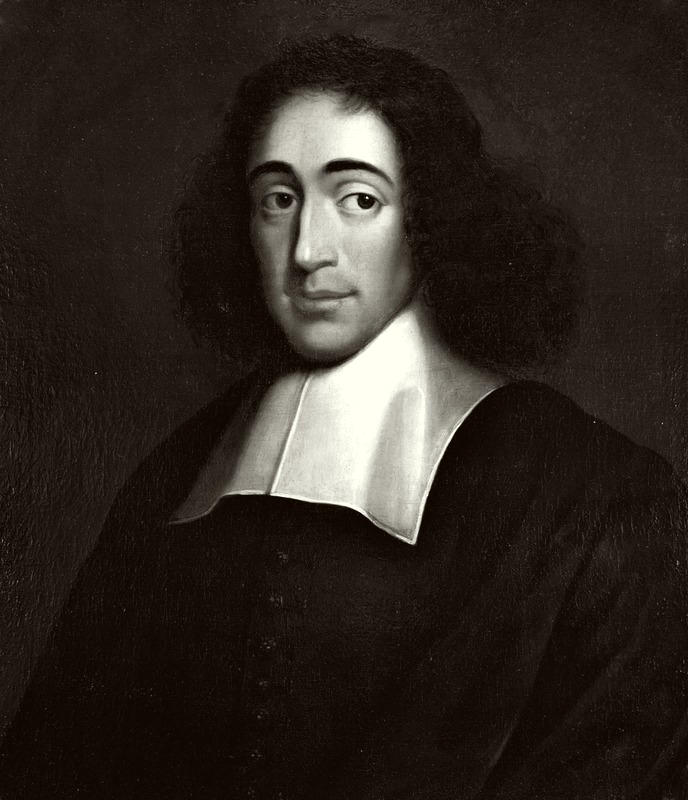

以"几何学方法"重建形而上学与伦理学的荷兰哲学家。他宣告"上帝即自然"，把万物收纳于唯一的实体之中；他把人的激情、奴役与自由全部纳入必然性的法则，并以"对神的理智之爱"给出幸福的可能。他生前被犹太社团与教会共同驱逐，死后却成为西方思想最深邃的"异端圣徒"。
斯宾诺莎哲学从"实体即上帝"的本体论出发，经"属性与样态"展开整个世界，再以"几何学方法"保证论证的必然性，最终落到"自由即对必然的认识"的伦理学。以下六个概念构成其思想骨架——点击卡片进入详细解读。
只有一个实体：它既是神、又是自然。万物的"存在"都不是独立实体，而是这唯一实体的显现——一即一切。
实体有无限属性，人只知其思维与广延；一切个别事物都是实体的"样态"——不是独立存在，而是"在"实体中。
以公理、定义、命题、证明来写作哲学——像欧几里得证明几何一样证明伦理学。哲学的"欧几里得化"。
思想与广延是同一实体的两种属性——两者平行而不相交。身体的状态与心灵的观念一一对应，无因果交互。
人被激情支配时就是"奴役"——因为激情源于对原因的茫然。三种基本情感：欲望、快乐、悲伤。
自由不是"为所欲为"，而是理解必然、并主动地接受必然。"对神的理智之爱"是最高幸福与自由。
斯宾诺莎生前只以真名出版过一部书（《笛卡尔哲学原理》），其余著作多在他死后由友人整理付梓。以几何学写就的《伦理学》是唯一完整体系的呈现——以下五部构成理解其思想的主干，每部均含详细解读。
五部分：论神、论心灵、论情感、论奴役、论自由。从"神即自然"到"理智之爱"——一部以公理方式写成的幸福论。
近代第一部"圣经考据学"与"思想自由论"：为信仰自由、言论自由与民主制度辩护——出版即被查禁。
论如何"改良知性"以获得真观念——从对财富、荣誉、感官快乐的批判开始，走向对"真善"的追寻。
以几何学形式重述笛卡尔哲学的第一、二部分，并附"形而上学思想"——斯宾诺莎方法论的演习场。
把"国家"当作"非道德化的自然系统"来分析：不依激情为恶，只论制度如何以利益与畏惧制衡权力。
篇幅短、主题亲切：斯宾诺莎为什么放弃财富与荣誉、专心追求"真善"？这是理解他全部著作的"动机之书"。
看斯宾诺莎如何为"自由"辩护：信仰自由、言论自由、民主制度。这部书也让你明白他为什么被驱逐——他动摇了神权与教会的根基。
这里是斯宾诺莎哲学的"硬核"：定义、公理、命题——从"实体"到"属性与样态"。建议放慢速度，逐条对照"证明"来读，不要跳过。
第三部分论情感（欲望/快乐/痛苦）、第四部分论奴役、第五部分论自由与"对神的理智之爱"。哲学在这里变成"生活指南"——斯宾诺莎的雄心正是"让哲学救人"。
对照笛卡尔（实体二元）与莱布尼茨（单子多元），看斯宾诺莎的"一元论"如何被讨论；再读德勒兹《斯宾诺莎与表现问题》或陈嘉映对斯宾诺莎的导读，看当代如何重新理解他。
本站是为系统学习斯宾诺莎哲学而做的导读。内容以概念为骨架、以著作为血肉——概念页展开每个核心命题的定义、论证、实例与延伸思考；著作页逐部解读背景、核心论点、结构要点与关键段落；生平页还原一个被两度驱逐、却以磨镜片为生、终生不改其志的"哲学的隐士"；名言页提供直接感受其文字与思想的入口。
斯宾诺莎是近代哲学中"最孤独也最完整"的思想家：他被犹太社团驱逐、被加尔文教派查禁、被整个欧洲当作无神论者咒骂——然而他一生没有写过一个字的辩白，只是安静地磨他的镜片、写他的《伦理学》。他以必然性吞并了自由，却在"理智之爱"中找到了真正的安宁；他论证了"神即自然"，却被后世称为"最具神性的人"。
本站所有引文若为概括性表述，均标注"意译"；术语翻译全书统一。后续将不断扩充内容——新增概念卡片将直接追加到概念页，无需改动其他页面。